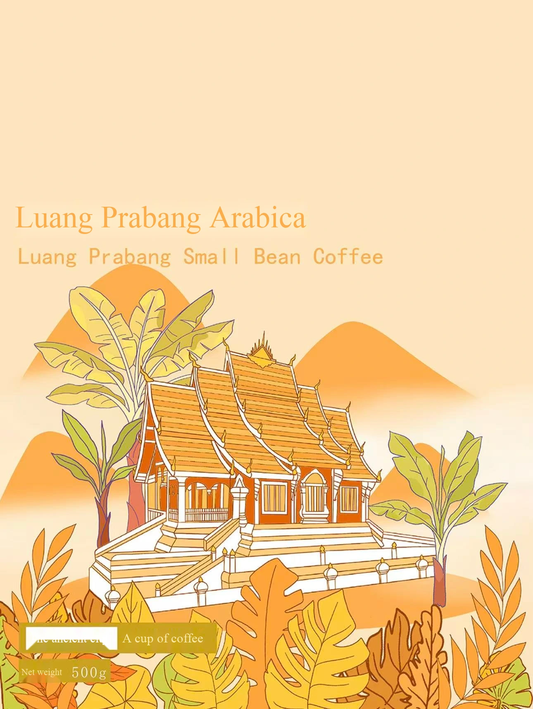
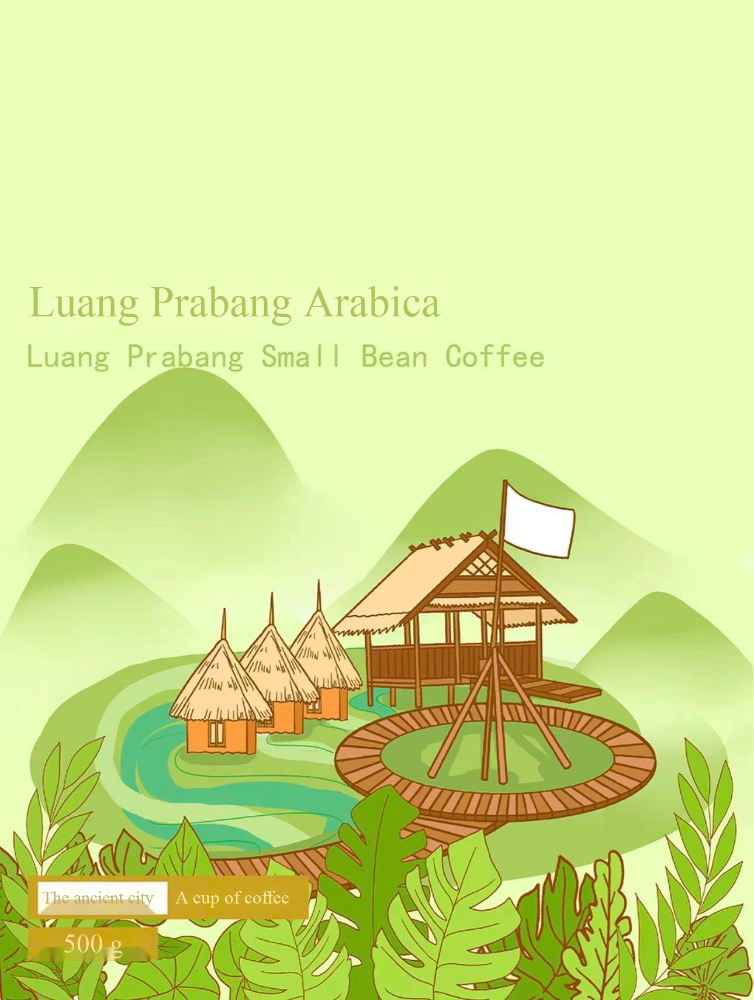

Packaging · Early work, reframed
Luang Prabang
Coffee
Three origins, one packaging language.
One landscape illustration on each pack now tells you the coffee's origin at a glance. We kept the original drawings and refined the colour and layout around them.
Starting point
Good drawings,
but the packs read like posters.
This early work had three original illustrations: the old town, a wetland and a waterfall. The art filled each pack as a background, and the front and back repeated information. We wanted the three to read as one product series.



Approach
Origin takes the lead
Each illustration moved from a full background to the single face of its product.
A shared colour ground
Warm white and coffee brown are the base. Amber, moss green and mineral blue only tell the origins apart.
Information steps back
Front and back repeat less. A label area and breathing room remain, so the series reads as product, not poster.

Material and margin stay consistent across the three packs.

Into retail
Postcards, gift boxes and cupping tools carry the origin colours. These are concept visuals.

Outcome
Keep the story,
refine the system.
The three original illustrations stay at the heart of the series. A clearer palette and layout turn them into packaging that reads as one family. Packaging and retail images are concept visuals.
View all projects ↗